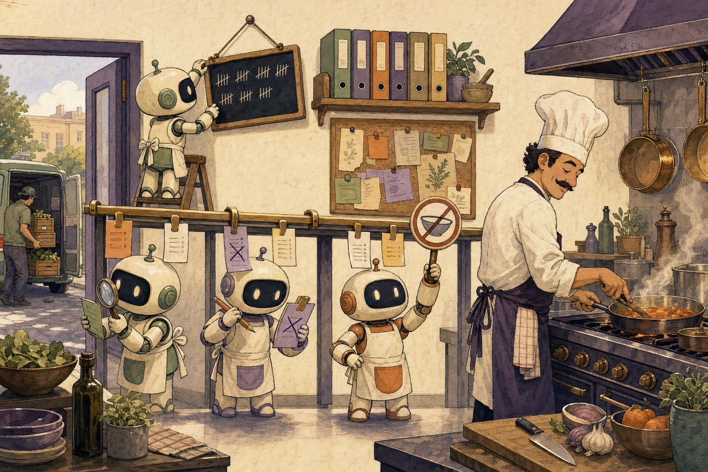

Level 0 Five minutes · no jargon
Explain like I'm five
Imagine a busy restaurant kitchen. A head chef cooks every dish. Order tickets come in all day, and each one travels along a rail to the chef.

The chef is Claude Code
The chef is very good. Give the chef a ticket that says "read this file" or "run this command" and it gets done. Claude, the AI, is the one writing the tickets. The chef, Claude Code, is the one doing the cooking.
Usually the ticket goes straight from Claude to the chef. A mod puts a helper on the rail, between the ticket and the stove.
What a helper can do with a ticket
Every helper on the rail gets the ticket before the chef does. A helper can do one of three things:
- Look and pass it on. "A soup order. I'll make a tally mark." The ticket goes on unchanged. This is observing.
- Change it and pass it on. "This says onions, and the customer is allergic. I'll cross that out." The chef sees the new ticket. This is rewriting.
- Keep it. "We're out of fish. I'll tell the customer myself." The chef never sees that ticket. This is answering.
When the chef finishes a dish, it travels back past the same helpers in reverse. A helper can add a garnish on the way out.
Helpers can redecorate, too
Some helpers don't touch the food. They hang a chalkboard in the dining room showing how many orders came in today. Or they put up a little sign by the door. That's a mod drawing in Claude Code's screen: a panel beside the conversation, a line above the place you type, a new look for the spinner.
The rest of the kitchen
Mods aren't the only way to change how the kitchen runs. There are other ways, and each is good at something different:
- A note pinned on the wall ("we never use peanuts") is CLAUDE.md. Everyone reads it every day.
- A recipe binder on the shelf is a skill. The chef takes it down only when cooking that dish.
- A delivery van that brings new ingredients and tools is an MCP server. It gives the kitchen things it didn't have.
- A bell that rings a person outside, who shouts back "OK!" or "Stop!", is a settings hook. It works, but the person is outside and can only shout.
- A helper standing right on the rail is a mod. It's inside the kitchen, it remembers things between tickets, and it can change anything that passes.
A plugin is the box all of these come in when you bring them to a new kitchen.
Who goes first?
Helpers stand in a fixed order. The restaurant owner's helpers stand closest to the door, so they see every ticket first. The owner's helpers are the people your workplace puts there. Your own helpers come next, then the kitchen's own built-in ones, then the chef. Because the owner's helpers see a ticket first, they can make sure nobody behind them breaks the house rules.
Two warnings
- A helper who faints lets the ticket through. If a helper gets confused or takes too long, the kitchen skips them and the ticket goes on to the chef. A helper whose job is to stop dangerous tickets needs a backup plan that says "if I'm not sure, stop it." In mods that backup plan is called
.catch. - Helpers can do anything you can do. They aren't locked in a box. A helper you bring in can open the fridge, read the mail and use the phone. Only hire helpers you trust. You can read a helper's job list before you hire them with
claude plugin validate.
What helpers remember
A helper can remember things in three ways:
- In their head. Forgotten whenever the helper takes a break and comes back (a reload).
- On a whiteboard. Kept all shift, but wiped clean when someone says "start over" (
/clear). - In a ledger in the safe. Kept for good, shift after shift.
If a helper copies the whiteboard into the ledger, they have to check the ledger first after the board gets wiped. Otherwise they write zero over a real number. We made exactly this mistake in one of our own mods.
What to remember
- A mod is a helper standing on the rail between Claude and Claude Code.
- It can look, change or answer, and it can redecorate the room.
- Use the lightest tool that does the job: a note, a recipe, a delivery, a bell or a helper.
- A helper whose job is to stop things needs a backup plan for when it faints.
- Only hire helpers you trust, and read their job list first.
Ready for the grown-up version? Mods 101 uses the same kitchen with the real names: register, on, $, e and next.